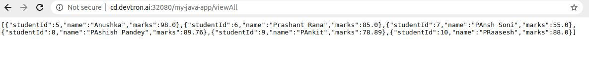

Introduction
This document will help you to deploy a sample Spring Boot Application, using mysql Helm Chart
1. Deploy a mysql Helm Chart
To deploy mysql Helm Chart, you can refer to our documentation on Deploy mysql Helm Chart
2. Fork the Git Repository
For this example, we are using the following GitHub Repo, you can clone this repository and make following changes in the files.
* Configure application.properties
Set the database configuration in this file.
spring.datasource.url=jdbc:mysql://<service-name>/<mysql database-name>
spring.jpa.hibernate.ddl-auto=update
spring.jpa.show-sql=true
spring.datasource.username=<mysql-user>
spring.datasource.password=<mysql-password>
spring.datasource.driver-class-name=com.mysql.jdbc.Driver
spring.jpa.properties.hibernate.dialect=org.hibernate.dialect.MySQL5Dialect
spring.jpa.open-in-view=true
* Configure the Dockerfile
# syntax=docker/dockerfile:experimental
FROM maven:3.5-jdk-8-alpine as build
WORKDIR /workspace/app
COPY pom.xml .
RUN mvn -B -e -C -T 1C org.apache.maven.plugins:maven-dependency-plugin:3.0.2:go-offline
COPY . .
RUN mvn clean package -Dmaven.test.skip=true
FROM openjdk:8-jdk-alpine
RUN addgroup -S demo && adduser -S demo -G demo
VOLUME /tmp
USER demo
ARG DEPENDENCY=/workspace/app/target/dependency
COPY --from=build /workspace/app/target/docker-demo-0.0.1-SNAPSHOT.jar app.jar
ENTRYPOINT ["java","-jar", "app.jar"]
3. Create Application on Devtron
To learn how to create an application on Devtron, refer to our documentation on Creating Application
* Git Material
In this example, we are using the url of the forked Git Repository.
* Docker configuration
Give, the path of the Dockerfile.
* Configure Deployment Template
Enable Ingress, and give the path on which you want to host the application.

* Set up the CI/CD Pipelines
Set up the CI/CD pipelines. You can set them to trigger automatically or manually.
* Trigger Pipelines
Trigger the CI Pipeline, build should be Successful. Then trigger the CD Pipeline, deployment pipeline will be initiated, after some time the status should be Healthy.
4. Final Step
* Test Rest API
It exposes 3 REST endpoints for it’s users to create, to view specific student record and view all student records.
To test Rest API, you can use curl command line tool
Create a new Student Record
Create a new POST request to create a new Transaction. Once the transaction is successfully created, you will get the student id as a response.
Curl Request is as follows:
sudo curl -d '{"name": "Anushka", "marks": 98}' -H "Content-Type: application/json" -X POST http://<hostname>/<path-name>/create
View All Student’s Data
To view all student records, GET Request is:
path will be the one that you have given in Step 3 while configuring the Deployment Template.
http://<hostname>/<path>/viewAll

View student’s data By student ID
To view student data by student id, GET Request is:
http://<hostname>/<path>/view/<id>
path will be the one that you have given in Step 3 while configuring the Deployment Template.